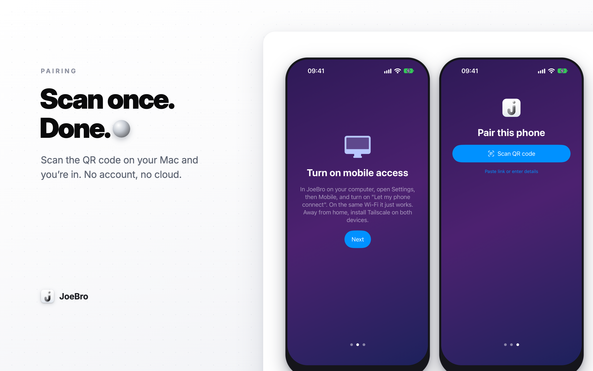

I’m Joe, creator of JoeBro and JoeBro Mobile. The iPhone app is a client for the JoeBro host, not a separate cloud account. Pairing is off until I enable it, which makes the first security step a deliberate action on the Mac.
Pair only when you are ready
In JoeBro on the Mac, open Settings > Mobile and turn on Let my phone connect. The Mac displays a QR code; JoeBro Mobile scans it and saves the host address and token. The mobile app checks the address and token before saving. If scanning is unavailable, the Mac can provide a link or you can enter the values manually.
The token is stored in the iPhone's Keychain. The phone listener is separate from the Mac app's local listener, requires the token on every request, and only starts when a token exists. By default it binds to the Mac's Tailscale address. The documented setup recommends Tailscale for access away from home; the listener should not be exposed by forwarding a port from the public internet.
If a phone is lost
Use Rotate token in the Mac's Mobile settings. This invalidates existing pairings, so every phone must scan again. That is useful if a device is lost or you no longer want it connected. It also means token rotation interrupts all paired phones rather than just one.
The phone agent's authority is intentionally limited: it cannot add MCP servers or plugins, edit API tools, or change the push key. Those controls can start programs or change sensitive host configuration, so they stay on the Mac. If you enable command execution for the phone agent, that is a separate Mac-side choice.
A QR code is convenient, but treat its token like a credential while pairing. Scan it only with the intended phone, avoid sharing screenshots of it, and rotate it if it may have been exposed. The security model still depends on the network path and on keeping the Mac account and phone protected.
JoeBro Mobile is source-only and requires iOS 17 or later; it connects to JoeBro 1.3 or later. The Mac must remain open and awake for the documented setup. Full details are in JoeBro and JoeBro Mobile.
Source code and current setup requirements
JoeBro is GPLv3 software. Read the repositories for installation steps, prerequisites, and current limits.